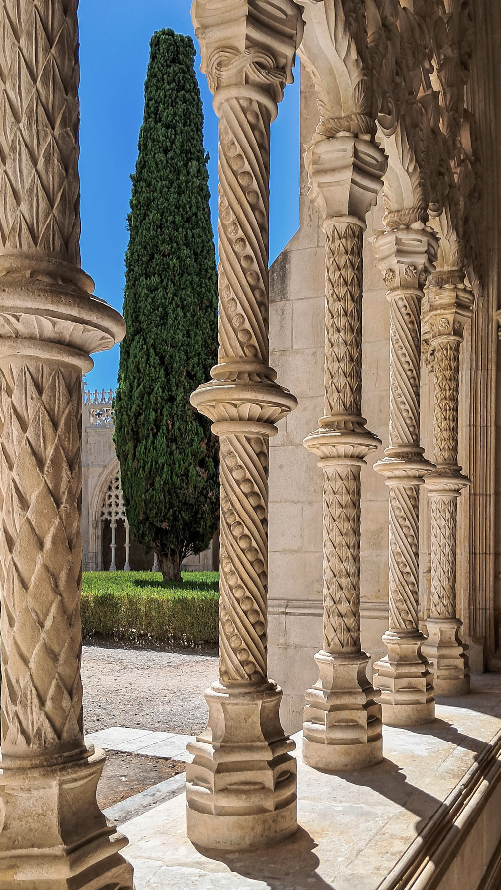

Journeys in Cities · Lisbon
Why Lisbon makes more sense in layers
A city of ruptures and reinventions, best understood by following the conversations between old quarters, planned avenues and everyday life.
Explore Lisbon ↗
The BLU Journal
Cultural perspectives, places worth understanding and notes from the journeys we curate.
From the journal
The journal is being prepared as an editorial companion to the journeys. These first themes show the direction; full articles will follow after review.
Editorial previewJourneys in Cities · Lisbon
A city of ruptures and reinventions, best understood by following the conversations between old quarters, planned avenues and everyday life.
Explore Lisbon ↗
Journeys in Time · Sintra
Beyond palaces, a landscape shaped by ideas about nature, privacy, imagination and the deliberate composition of a life.
Explore Sintra ↗
Craft & Table · Alentejo
Materials become cultural knowledge when landscapes, makers and generations remain part of the story.
Explore Alentejo ↗Letters from Portugal
The newsletter sign-up remains in preview and will be connected only after approval.
Join the preview list ↗